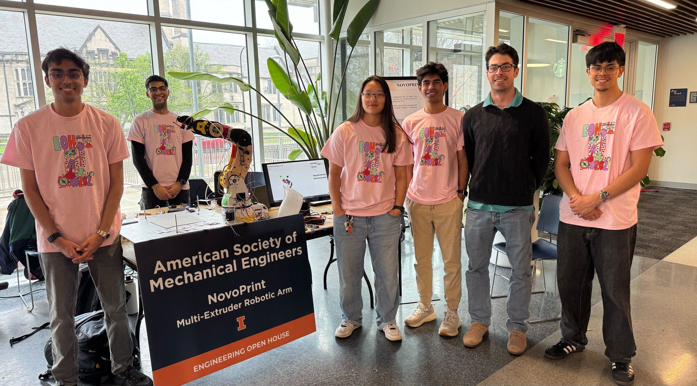
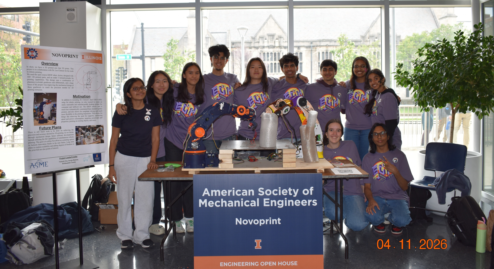

Intro//Yap

This project took the majority of my freshman/sophomore spring semesters.*Easily counted double digits in all-nighters, multiple 60+ hour weeks, lots and lots of class/homework skipped... (sorry professors). This began under ASME@Illinois Product Development Committee. The goal was to 3D print a 6-axis robotic arm to be used for nonplanar 3D printing, and then manufacture multiple for simultaneous printing. I was fortunate enough to have serial robotics and 3d printing experience and was chosen as one of the project leads at the beginning of the project. Logistical issues were inevitable, and the first semester (2.5 months) of the project pretty much had a team of 4 people. Literally everything that could have went wrong did. Wrong electrical parts were ordered from alternate vendors (they needed to be department-approved) when rushing tight deadlines, parts got lost in the receiving office, parts were out of stock, Amazon shipped us a faulty part, and my laptop somehow blew up. So the goal for the second year was to try to mitigate these unfortunate series of events.


I ended up taking a Co-Op in the Fall, so I wouldn't be there when the team was expanding. This meant I needed to start organizing my thoughts in a legible way, instead of keeping everything in my head or my unsaved txt file. I tried my best to help on the administrative end to maximize everyone's efficiency. While my co-lead Sergio and I could recite the parts and next steps in our sleep, organization was huge for the team to actually make progress.

